叁色旅行为客户提供最舒适的旅行体验
我们明白,旅行应该带给旅行者惊喜的发现,激动人心的体验,令人深思的情景和值得记忆的瞬间
推荐旅行
-
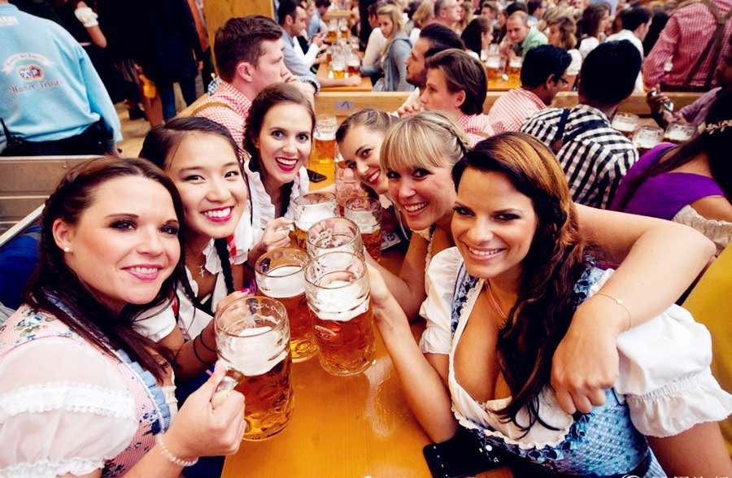
-
- 航班：香港→慕尼黑
参考航班：LH731 香港→慕尼黑 23:15-05:25+1天 飞行时长12小时10分晚上：前往香港机场，搭乘国际航班飞往德国啤酒之城慕尼黑。
-
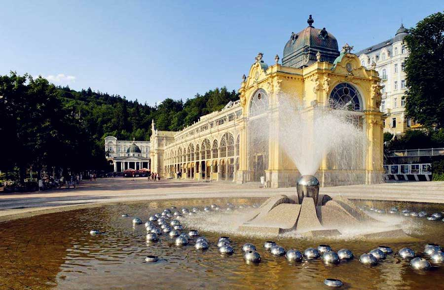
-
- 行程：慕尼黑机场→玛利亚温泉城
上午：抵达慕尼黑机场后前往欧洲著名的温泉疗养胜地之一的玛利亚温泉城。下午：抵达后前往滨海温泉高尔夫度假酒店入住。然后前往PLANA的Chodovar Breery，享受独一无二的啤酒温泉浴，夜晚可以欣赏距离酒店480米远的音乐喷泉。
【玛利亚温泉城(Marianske Lazne)】1528年，费迪南德国王对这种具疗效的温泉水及温泉泥大感兴趣极力推荐，使这里的温泉广为人知，致使人口大增而设镇。如今，该小镇已经发展成为欧洲著名的温泉疗养胜地之一。历史上有众多名人曾经前往疗养，如高尔基、托尔斯泰、果戈里、肖邦、易卜生、哥德及英国女王等。
温馨提示：慕尼黑距玛利亚温泉城267公里，车程约3小时
-
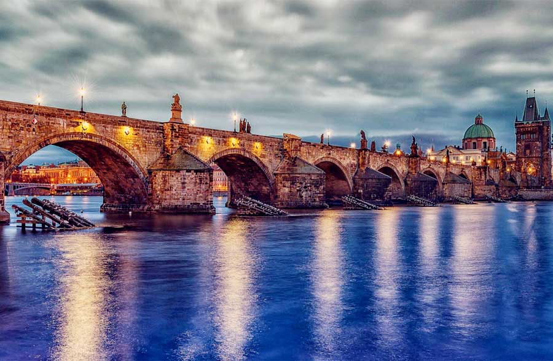
-
- 行程：玛利亚温泉城→卡罗维发利→布拉格
上午：前往温泉小镇卡罗维发利，游览弗日德罗柱廊、姆林斯卡柱廊﹑索多瓦柱廊，品尝神奇的治疗矿泉水。下午：前往捷克首都布拉格，参观中欧最古老之石桥查理大桥，桥上有众多街头艺人当街秀才艺。傍晚在Letna啤酒花园点上一杯冰镇啤酒欣赏河景。
【查理大桥(Charles Bridge)】始建于14世纪，是捷克历代国王加冕游行的必经之路。大桥上有三十尊圣者雕像，据说只要用心触摸石雕像，便会带给此人一生的幸福。这里已成为布拉格艺术的展示场所，游人能观赏手工艺创作表演，还能买到很多艺术品。
温馨提示：玛利亚温泉城距卡罗维发利58公里，车程约50分钟温馨提示：卡罗维发利距布拉格127公里，车程约2小时
-
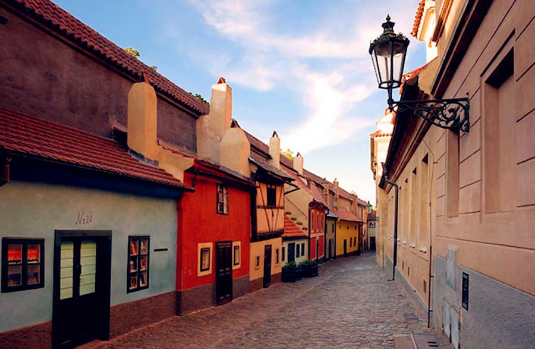
-
- 行程：布拉格（Prague ）：布拉格城堡区、the vrtba garden、布拉格广场
上午：游览布拉格城堡区：总统府、王室加冕及长眠之所圣维特教堂、黄金巷。下午：参观1715年修建的the vrtba garden，这是一座中规中矩的巴洛克风格花园。然后游览布格拉老城：老市政厅、天文钟、老城广场。
【黄金巷(Golden Lane)】小屋林立的黄金巷，宛如童话故事内的小巧房舍，是布拉格最诗情画意的街道。黄金巷之所以会引起如此名声，还是名作家卡夫卡曾居住于此的缘故，1916年时捷克著名的文学家、当时只是一位银行小行员的卡夫卡，喜欢这里的环境，租了这里门牌为22号的房子作为工作室，并在此默默完成了当时不为人知的作品《乡村医生》和《致科学院的报告》；而门牌12号住的则是历史小说家玛兰纳。
-
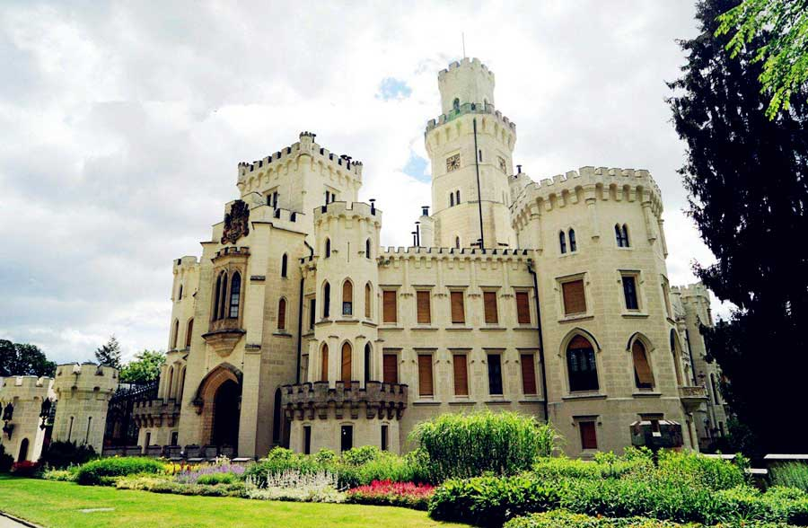
-
- 行程：布拉格→赫卢博卡
上午：游览胡波卡城堡，位于伏尔塔瓦河畔赫卢博卡旁边的山地上，白色六角形柱体的外墙加上拥有如英国温莎堡一样的浪漫建筑风格，被公认为是捷克最美丽的城堡。下午：前往赫卢博卡酒店入住休息。
【胡波卡城堡(Hluboka Castle)】最早建于13世纪，最初是一座哥特式建筑。1561年赫拉德兹家族购得此城堡，两年后将城堡进行改建，加入了文艺复兴建筑风格。1661年，城堡为施瓦岑贝格家族所有，该家族两次对赫鲁波卡城堡进行了改建，为城堡加入了巴洛克和新哥特式艺术风格。十九世纪中期，王子阿道夫二世和他妻子伊莲诺拉从英国回来，决定仿照英国温莎城堡改建为一幢新哥特式的建筑，并从维也纳邀请了名建筑师比尔来主持重建工作，将原来的巴洛克式改为新哥特风格。从一八四零年开始至一八七一年，整整花了三十一年才完工。
温馨提示：布拉格距赫卢博卡143公里，车程约2小时
-
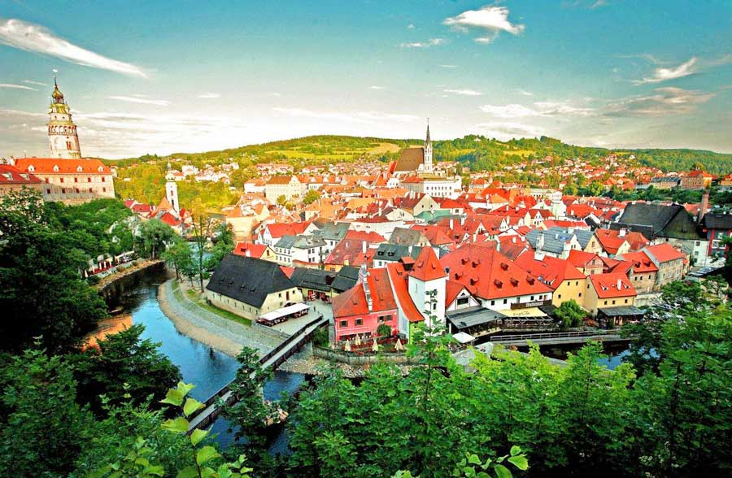
-
- 行程：赫卢博卡→克鲁姆洛夫→赫卢博卡
上午：前往联合国教科文组织指定保护的世界文化遗产城市之一的克鲁姆洛夫。下午：游览克鲁姆洛夫这座欧洲最美丽的中古小城之一，走进这座城市时光仿佛停留在十八世纪。
【克鲁姆洛夫(Cesky Krumlov)】位于波希米亚南部的舒马瓦山岳和布兰斯基森林之间。它地处穿越伏尔塔瓦河的中世纪东西向的道路上。城市依据蜿蜒的河流在两岸发展，而且布局安排得十分紧密。它建于公元13世纪。具有政治、贸易和宗教功能。
温馨提示：赫卢博卡距克鲁姆洛夫34公里，车程约40分钟
-
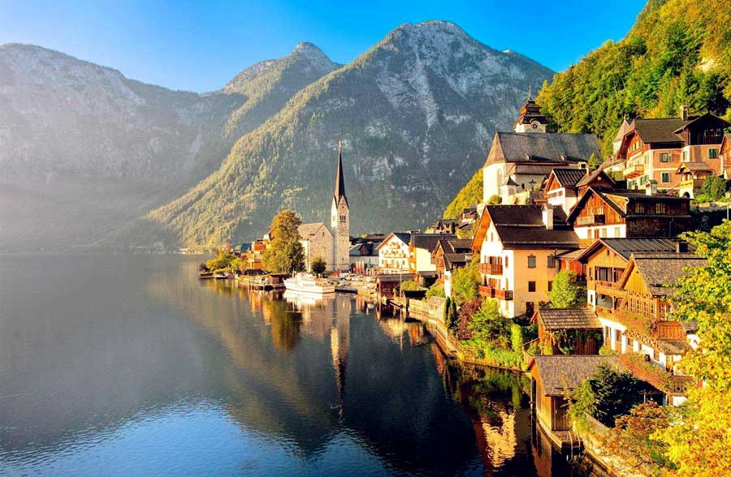
-
- 行程：赫卢博卡→萨尔茨卡默古特湖区
上午：前往奥地利著名的萨尔茨卡默古特湖区。下午：游览萨尔茨卡默古特湖区以秀山丽水闻名的小镇哈尔施塔特，在哈尔施塔特湖区漫步休闲。
【萨尔茨卡默古特湖区(SalzKammergut)】原是皇家领地，盐矿为哈布斯堡皇朝带来了可观的经济收入。萨尔茨卡默古特地区山峦重叠，湖泊星罗棋布。优美的自然风景，曾吸引了无数艺术家和文人墨客。如今，这里清新的空气、清澈见底的湖水、以及名胜古迹和完善的运动设施，构成了人们理想的度假胜地。
温馨提示：赫卢博卡距萨尔茨卡默古特湖区200公里，车程约2小时16分钟
-
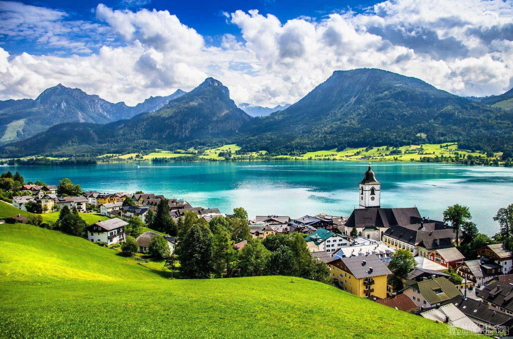
-
- 行程：萨尔茨卡默古特湖区
上午：游览湖区小镇圣沃尔夫冈，漫步于悠长的小巷。乘船游览圣沃尔夫冈湖，欣赏保存完好的中世纪建筑风格的建筑。下午：前往月亮湖，参观《音乐之声》电影中婚礼举行的15世纪教堂。
【圣沃尔夫冈(Sankt Wolfgang)】在莫扎特故乡萨尔茨堡东南约80公里，依山傍水，楼房掩映在层峦叠翠之中，镇上著名景点有圣沃尔夫冈建造的教堂和著名的白马酒店，100多年前，奥地利皇后茜茜公主经常来此避暑。
-
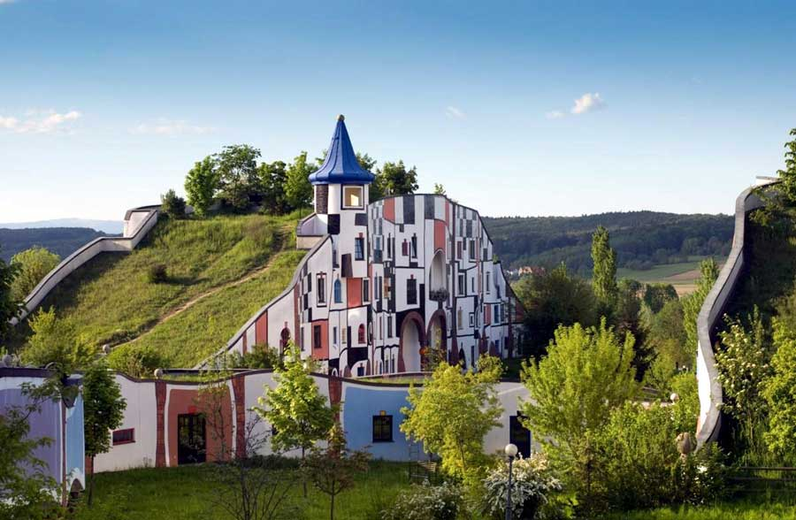
-
- 行程：萨尔茨卡默古特湖区→百水山庄
全天：住宿百水山庄，该温泉山庄由奥地利著名建筑师百水先生设计，茅草屋顶、圆形的屋顶、色彩缤纷的外观和金色的圆顶，周围环绕着田野和草地，创造极具艺术感的生活空间。抵达后自由休闲，享受独特的Vulkania矿泉的天然温泉。
【百水山庄温泉酒店(Rogner Bad Blumau)】由奥地利艺术家百水先生设计,位于奥地利施第里亚地热区的中央，它不仅是一个豪华温泉酒店，也是一个完整的艺术作品。地热公园于1997年开始运营，它拥有丰富多彩的拼贴外墙和绿化屋顶的设计，目光所及没有一条直线。公园安排得像一个有不同地区的城市，中心是室内环形温泉浴场，并拥有分散在开阔的风景中的住宿、游泳、沐浴和餐厅区的各种配套服务设施。
温馨提示：萨尔茨卡默古特湖区距百水山庄308公里，车程约3小时15分钟
-
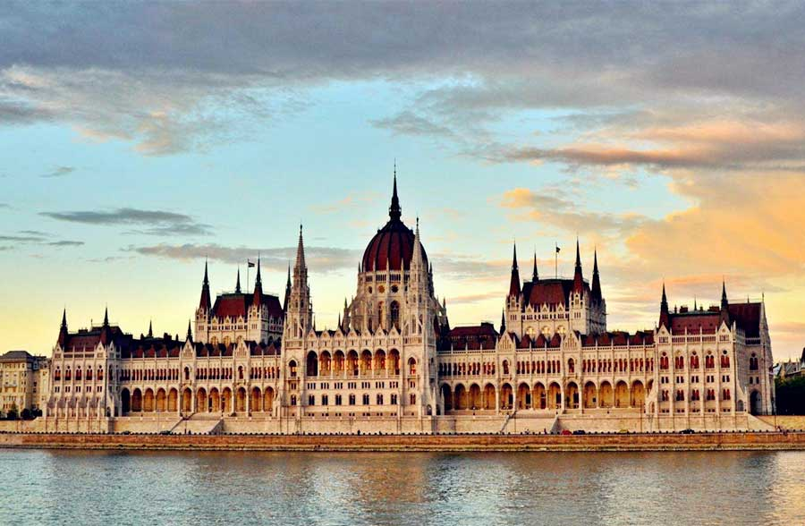
-
- 行程：百水山庄→布达佩斯
上午：前往布达佩斯。下午：抵达后游览安德拉什大街、英雄广场、国会大厦。
【匈牙利国会大厦(Hungarian Parliament Building)】是匈牙利国会的所在地，同时也是欧洲最古老的立法机构建筑之一和布达佩斯的重要地标。它坐落于多瑙河畔的自由广场，由建筑师Imresteindi所设计，采用当时流行的哥特式建筑风格，把众多垂直细长的元素与尖塔融入了整个建筑中，成功塑造了许多当时重要公共建筑的新样貌，目前是匈牙利最大的建筑物、欧洲第二大议会建筑。
温馨提示：百水山庄距布达佩斯相距294公里，车程约3.5小时
-
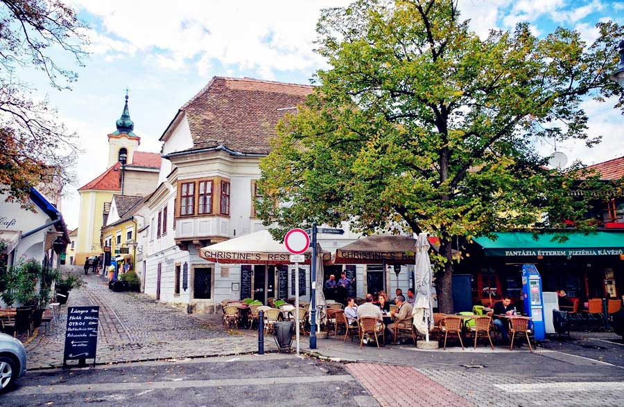
-
- 行程：布达佩斯→圣安德烈→布达佩斯
上午：游览链桥、多瑙河畔自由女神纪念碑、渔人堡、马提亚斯教堂。下午：前往当地华人称为山丹丹的圣安德烈小镇，这里是艺术家聚集地，窄窄的小巷、伸向小丘的圆石小路，展现了十八世纪城市景观。
【圣安德烈(Szentendre)】各式教堂、工艺品店、画廊、作坊、博物馆、酒吧、咖啡厅鳞次栉比，彩色的民居风格独特，蜿蜒的石子小街更让人们感受到一种传统的浪漫气息。城内有七个尖塔教堂，构成城市的主要画面。鳞次栉比、大小不一的民房，把各街道连在一起的、有的只能一人通过的小巷增添了城市的斑斓色彩和生活气氛。城市中心广场上有一个商人们募捐的东正教双十字架。
温馨提示：布达佩斯距圣安德烈22公里，车程约30分钟
-
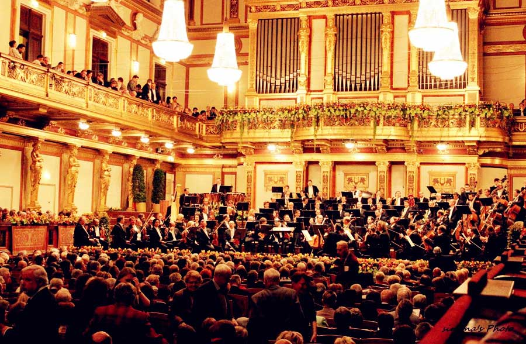
-
- 行程：布达佩斯→维也纳·金色大厅演奏会
上午：前往音乐之都维也纳。下午：游览霍夫堡皇宫、博物馆区、小金人，体验维也纳咖啡文化。晚上：特别安排前往著名金色大厅欣赏“维也纳莫扎特乐队”演奏会。
【维也纳音乐协会金色大厅(Goldener Saal Wiener Musikvereins)】又称黄金厅、维也纳爱乐厅，是维也纳最古老、最现代化的音乐厅，是维也纳也是世界上著名的音乐厅之一。维也纳新年音乐会按照传统都会在这里举行，每年随着新年音乐会通过电视转播将该大厅金碧辉煌的装饰和无与伦比的音响效果展现在全世界的观众面前。
温馨提示：布达佩斯距维也纳243公里，车程约2.5小时
-
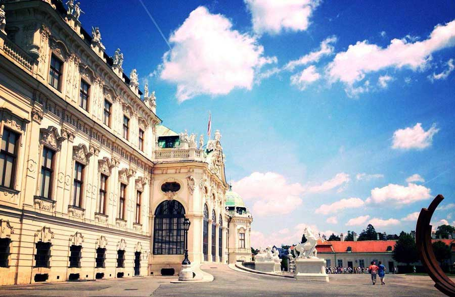
-
- 航班：维也纳→香港
参考航班：OS067 维也纳→香港 17:45-11:10+1天 飞行时长11小时25分上午：游览美泉宫、史蒂芬大教堂、维也纳步行街克恩顿大街自由休闲购物。下午：前往机场，搭乘航班返回香港。
【维也纳(Vienna)】奥地利首都，享誉世界的文化名城，既有“音乐之都”的盛名，又有以精美绝伦，风格各异的建筑而赢得的“建筑博览会”的美称。还有“多瑙河的女神”之称。环境优美，景色迷人，冬温夏凉。山之西是华丽住宅区，有花园及葡萄园围绕。多瑙河流贯市内，水碧山秀，风景如画。美泉宫及其花园被联合国教科文组织列入《世界文化遗产名录》。
-
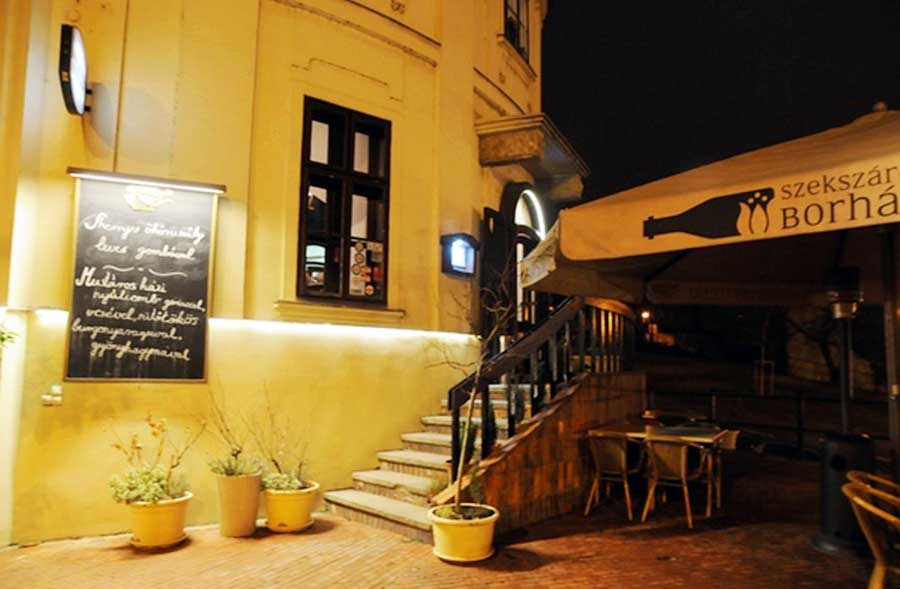
-
- 航班：香港
上午：抵达香港，行程圆满结束！
【特别推荐·Aranyszarvas餐厅】2010年被评选为匈牙利最受欢迎10大餐厅之一。